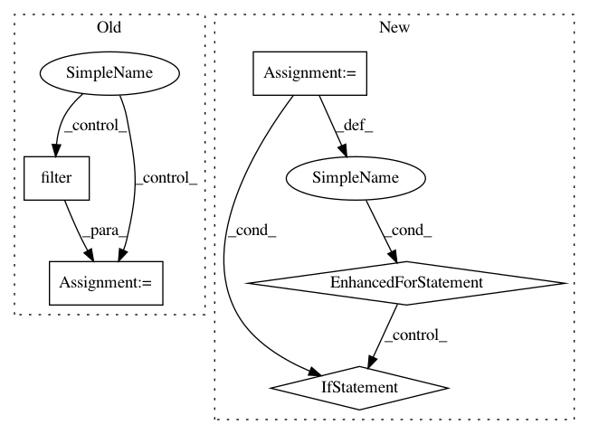

8bc46bda10949ec121c784fa0dd70deea12438f9,foreman/data_refinery_foreman/foreman/management/commands/rerun_salmon_old_samples.py,,update_salmon_versions,#Any#,37
Before Change
latest_salmon_version = salmon_versions[0]
// find the samples that were not processed with `latest_salmon_version` and trigger new processor jobs for them
newest_computational_results = ComputationalResult.objects.all()\
.filter(
samples=OuterRef("id"),
processor__name=ProcessorEnum.SALMON_QUANT.value["name"]
)\
.order_by("-created_at")
samples = experiment.samples.all().annotate(
salmon_version=Subquery(newest_computational_results.values("organism_index__salmon_version")[:1])
)\
After Change
.prefetch_related("samples__original_files")
latest_salmon_version = None
for quant_result in quant_results:
if not latest_salmon_version:
// we can safely ignore the latest salmon version, that will be the first
// quant result. Note we are ordering by -organism_index__created_at
latest_salmon_version = quant_result.organism_index.salmon_version
elif latest_salmon_version != quant_result.organism_index.salmon_version:
// we found a quant result associated with an experiment where we need to run salmon
// hopefully each computational result is associated with a single sample
for sample in quant_result.samples.all():
original_files = list(sample.original_files.all())
if not len(original_files): continue
// Ensure that there"s no processor jobs for these original files that the foreman
// might want to retry (failed | hung | lost)
has_open_processor_job = ProcessorJob.objects.all()\
.filter(original_files = original_files[0], pipeline_applied=ProcessorPipeline.SALMON)\
.filter(
Q(success=False, retried=False, no_retry=False) |
Q(success=None, retried=False, no_retry=False, start_time__isnull=False, end_time=None, nomad_job_id__isnull=False) |
Q(success=None, retried=False, no_retry=False, start_time=None, end_time=None)
)\
.exists()
if (has_open_processor_job):
continue
create_processor_job_for_original_files(original_files)
def update_salmon_all_experiments():
Creates a tximport job for all eligible experiments.
eligible_experiments = Experiment.objects.all()\
.filter(technology="RNA-SEQ", num_processed_samples=0)\
In pattern: SUPERPATTERN
Frequency: 3
Non-data size: 5
Instances
Project Name: AlexsLemonade/refinebio
Commit Name: 8bc46bda10949ec121c784fa0dd70deea12438f9
Time: 2019-08-22
Author: arielsvn@gmail.com
File Name: foreman/data_refinery_foreman/foreman/management/commands/rerun_salmon_old_samples.py
Class Name:
Method Name: update_salmon_versions
Project Name: matplotlib/matplotlib
Commit Name: 1cfdb741661c2c9083235f258512c39cecae0da0
Time: 2019-02-06
Author: anntzer.lee@gmail.com
File Name: lib/matplotlib/backends/backend_qt5.py
Class Name: NavigationToolbar2QT
Method Name: edit_parameters
Project Name: Pinafore/qb
Commit Name: 2f74f04253d5a90459401d0f09ea0559d50371a0
Time: 2016-06-25
Author: ski.rodriguez@gmail.com
File Name: util/guess.py
Class Name: GuessList
Method Name: check_recall